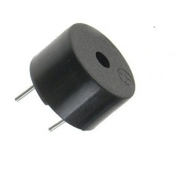

Dicas de costura Camon Guide
Circuito de hardware
Função: Mede a temperatura e a umidade do ambiente.
conectar: O sensor possui três pinos: VCC (alimentação), GND (terra) e DATA (sinal de saída). O pino DATA deve ser conectado a um pino digital do Arduino (geralmente o pino 2). O VCC vai ao 5V do Arduino, e o GND vai ao GND do Arduino. Esse sensor envia os dados de temperatura e umidade para o Arduino, que processa as informações.
Função Mede a distância entre o sensor e um objeto ou barreira, utilizando ondas sonoras.
Como conectar: O sensor tem quatro pinos: VCC (alimentação), GND (terra), Trig (gatilho) e Echo (eco). O VCC vai ao 5V do Arduino, e o GND ao GND do Arduino. O pino Trig deve ser conectado a um pino digital do Arduino (como o pino 9), e o pino Echo a outro pino digital (como o pino 10). Quando o Arduino envia um sinal no pino Trig, o sensor emite ondas sonoras e calcula o tempo que essas ondas levam para retornar ao pino Echo, assim calculando a distância.

Função: Emite um som (ou apito) para alertar ou indicar que uma condição foi atendida (por exemplo, uma distância muito próxima ou temperatura fora de um limite).
Como conectar:O buzzer possui dois pinos: VCC (alimentação) e GND (terra). O VCC vai ao 5V do Arduino, e o GND ao GND. O pino de sinal pode ser conectado a um pino digital do Arduino, que enviará um sinal para ativá-lo quando necessário.
Função: Controla todos os componentes e processa as informações coletadas pelos sensores, tomando ações (como acionar o buzzer ou as ventoinhas) com base nos dados obtidos.
Como conectar:O Arduino é a “cérebro” do sistema, conectando todos os componentes acima via pinos digitais e analógicos, dependendo dos requisitos dos sensores e dispositivos. Você alimenta o Arduino com uma fonte de energia, e ele comunica com os sensores e outros componentes por meio dos pinos de entrada/saída.

Função: Ventilam o ambiente ou ajudam a controlar a temperatura, acionadas quando a temperatura medida pelo sensor atinge um valor pré-determinado.
Como conectar:As ventoinhas normalmente precisam de uma corrente mais alta que o Arduino pode fornecer diretamente. Para isso, você pode usar um transistor (como o 2N2222) ou um relé para controlar a ventoinha. O pino de controle do transistor ou relé é conectado a um pino digital do Arduino (por exemplo, o pino 3). O transistor/relé permite que a ventoinha seja alimentada diretamente de uma fonte externa, enquanto o Arduino apenas controla a ativação.

- O Arduino processa os dados de temperatura e umidade do sensor DHT e os dados de distância do sensor ultrassônico.
- Se a temperatura ultrapassar um valor limite ou se a distância medida pelo sensor ultrassônico for muito próxima, o Arduino pode acionar o buzzer para alertar o usuário.
- Ao mesmo tempo, se a temperatura for alta, o Arduino pode ativar as ventoinhas para resfriar o ambiente.
- O buzzer e as ventoinhas são controlados diretamente pelo Arduino, enquanto os sensores fornecem os dados necessários para as decisões do sistema.
- Por meio de um código no Arduino IDE, você pode programar a lógica de controle, como ativar o buzzer quando a distância for inferior a um valor pré-estabelecido ou acionar as ventoinhas quando a temperatura exceder um certo limite.
Costura básica
- Agulha para costura (Procure ter agulhas de diferentes tamanhos, agulhas mais finas sao ideais para tecidos mais leves, enquanto as mais grossas para tecidos mais pesados)
- Linha para costura
- Tesoura
- Alfinetes
- Dedal (Serve para proteger os dedos ao empurrar a agulha atráves do tecido)
- Fita métrica
- Marcadores de tecido
- Tecido (O tipo de tecido depende do seu projeto, algodao é utilizado para pecas mais simples e delicadas e tecidos mais pesados para roupas e acessorios)
Exemplo de um kit de costura básica

O ponto corrido Para fazê-lo, é necessário enfiar a agulha no tecido e fazer uma laçada, puxando a linha até o final do fio. Em seguida, enfiar novamente a agulha no tecido e criar outra laçada, repetindo o processo até completar a linha desejada. Ao final, basta dar um nó para finalizar o trabalho. O ponto corrido pode ser utilizado em diversos tecidos, desde que a agulha e a linha sejam adequadas à espessura e à textura do material. Ele permite um acabamento discreto e elegante, além de ser uma opção rápida e simples para costuras mais básicas. Com a prática, é possível aprimorar a técnica e criar desenhos mais elaborados e detalhados.

Ponto de alinhavo é um tipo de ponto de costura simples, utilizado principalmente para juntar duas ou mais partes de tecido temporariamente antes de costurá-las permanentemente com uma costura mais forte. É bastante útil para fixar as peças enquanto você realiza a costura definitiva, garantindo que tudo fique no lugar certo.

Ponto atrás é um tipo de ponto de costura manual utilizado para fazer uma costura firme e durável. Ele é muito comum em costura à mão, especialmente para unir duas peças de tecido de maneira resistente e permanente. Esse ponto é conhecido por sua durabilidade, sendo ideal para áreas que precisarão de resistência, como costuras em roupas, sapatos, bolsas, ou outros itens que exigem uma costura forte.

circuito do arduino carregamento solar, um sistema de resfriamento composto por três coolers, um sistema de alarme que é ativado caso alguém se aproxime pelas costas e um sistema de sinalização para indicar quando a voz está sendo captada, cumprindo, assim, as diretrizes da Lei Geral de Proteção de Dados.